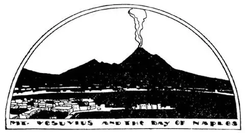
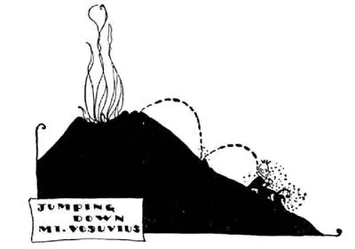

37
A Pile of Ashes a Mile High
一英里高的一堆灰

A PILE of ashes is not usually very beautiful, and if it is in your back yard it is usually very ugly. But in Italy there is a pile of ashes which every one thinks beautiful, though it is nearly a mile high and though it is in the back yard of a city called Naples. It is on the beautiful Bay of Naples, and people have built their homes and hotels around the bay so as to get a view of this pile of ashes, which is called Mount Vesuvius, though it’s not really a mountain at all.
In olden days when grown-up people believed in fairy-tales they said that a lame blacksmith lived down under the ground, that he kept a huge furnace burning there to heat the iron with which he worked. His name they said was Vulcan, and the smoke and flame that came out of the ground and the ashes that piled up above the ground were from his fires. So we call these mountains of ashes, through the top of which fire and smoke pour forth, volcanoes, after Vulcan.
There are volcanoes in many places in the World, but Vesuvius is the best known of all. We now know that volcanoes are huge fiery furnaces beneath the ground, but we also know that no man nor fairy nor god is down there keeping them burning. Some volcanoes in other parts of the World have burned out, but the fires of Vesuvius have not. Vesuvius is always smoking and burning. We can see smoke or steam coming out of its top in the day and we can see the firelight come out of its top at night, but usually it does no more damage than a huge smoking chimney would. But every now and then the fires start burning fiercely and rock and ashes are shot up into the air, and pieces of rock are blown to such fine powder that they float in the air like dust. This dust may float for months in the air and for thousands of miles to other countries far off from the volcano from which it comes. Strange to say, it is this dust from volcanoes that often makes the sunsets such brilliant colors.

维苏威火山和那不勒斯海湾
Near the Bay of Naples is a pile of ashes almost a mile high
那不勒斯附近，约1英里高的一堆灰
The fire in volcanoes is hotter than any fire we can make. We can make a fire so hot that it will melt copper and iron, but we can’t make a fire so hot that it will melt rock. A volcano fire melts rock as easily as if it were butter. The rock that the volcano melts flows over the top like a pot boiling over and runs down the sides in streams that gradually harden into rock as they cool off. This rock is called lava, and as there is plenty of lava around Naples the people there use blocks of lava to pave their streets.
Some years ago I was in Naples after Vesuvius had been firing up. The streets of Naples were filled with what looked like gray snow. The gray snow was dust that had fallen from the volcano, but it would not melt like snow and had to be carted away and dumped into the Bay of Naples. I wanted to see what the inside of a volcano looked like. There had been a railway almost to the top, but it had been wrecked. So I climbed from the bottom to the top, though it took half a day to do so, for at each step my feet sank deep into the ashes. I looked over the edge, down into the fiery mouth of the volcano. Every now and then pieces of rock would shoot high into the air and, looking up, I would dodge those that fell near-by. Entirely, too many were falling around me, so I started back down the side of the volcano. I didn’t walk down, I jumped, for each step I took was like jumping off a house, and at each step I fell, only I didn’t hurt myself when I fell, for I sank into the ashes up to my knees, up to my waist, up to my neck. It was great fun, like jumping into a pile of hay, only it was oh, so dirty! It took me half a day to go up—it took me about ten minutes to come down—but hours to wash off the ashes when I was down, and my clothes were utterly ruined.

It got too hot for me at the top so I jumped down the side
火山口太热了，于是我跳着下山了
Some birds build their nests on the tops of chimneys, but it seems strange that people should build their homes at the foot of a volcano that may blow up and destroy them at any time. Yet long, long ago people built a city at the foot of Vesuvius, nearer even than Naples. It was called Pompeii. All of a sudden one day Vesuvius began to burn and boil and then blew up. Before any one in Pompeii knew what was going to happen, before any one had time to move from the spot where he was working or playing, Vesuvius had poured down on this little city its deadly fire and smoke and gas, and every one was killed where he stood and buried deep in dust and ashes. There the city and its people lay buried for almost two thousand years. Not so very long ago the city was dug out, its houses and temples and theaters were uncovered, and travelers can now visit the ruins, walk through the streets, and go into the houses and shops where once upon a time people went about their daily tasks and pleasures without a thought that the end of the World was coming to them in the twinkling of an eye.
No one knows when Vesuvius may do the same thing again, but the people in Naples never seem to think of such a thing; they don’t worry; they go about the streets singing happily; in fact, it’s one of the few cities in the World where people sing on the streets.
We may hear people whistling on the street in this country, but seldom, if ever, do we hear them sing on the streets. Singing may not be a sign of happiness at all, but people in Naples sing and sing, especially at night. Taxi drivers sing, ragged street urchins sing, beggars sing, and they sing songs you hear at concerts or in the opera. One of the greatest singers that ever lived, who now is dead, but whom you can still hear singing on the phonograph, was once a street urchin in Naples. Then he came to America. His name was Caruso.
The Italian language is the language of singing, the language of music. Some one has said you can’t help singing if you speak Italian. Even the sheet music we use in this country is usually written in Italian and the directions for playing are given in Italian. In Italian almost every word ends in a vowel, that is, in a, e, i, o, or u. Piano and ’cello, soprano and alto are Italian words. Even Naples ends in a vowel, for in Italian it is called Napoli.
The name “Goat” is neither pretty nor musical and it wouldn’t sound well in a song, but across the Bay of Naples is an island the name of which in English is goat; but in Italian it is “Capri,” and songs are sung about “Bella Capri”—the beautiful Capri—the beautiful Goat Island.
In the rocky shore of Capri there is a sea cave which you can only enter in a rowboat through a low opening. The opening is so low you have to duck your head, and if the waves are high you can’t go through at all. The cave is called the Blue Grotto, for inside this rocky cave the water is such a beautiful clear blue that it seems almost as if your boat were floating on sky instead of on water. What makes it so blue? If you dip some of the water up in a bottle to take home as a souvenir—as I have known people to do—the water is just as colorless as the water in your own bathtub.
【中文阅读】
一堆灰，通常是不美的。如果它在你家后院里，通常会觉得它很丑。但是在意大利有一堆灰，尽管它几乎有一英里高，尽管位于一座叫那不勒斯的城市的后院里，人们却觉得它很美。它坐落在优美的那不勒斯海湾，人们在海湾周围建起住宅和宾馆，为的就是能看到这堆灰。人们称之为维苏威火山，尽管它并不是一座真正的山。
从前，在成年人还相信神话故事的时候，传说有一个跛脚的铁匠住在地底下，他让一个大熔炉在那里不停地燃烧，把他工作用的铁烧熟。据说他的名字叫法尔坎（古罗马神话中火和冶炼的神）。那些从地下喷出的烟和火焰，以及堆积在地上的灰烬就来自他的大熔炉。所以我们以“法尔坎”（Vulcan）之名，把那些不断喷出火和烟的山称作火山（volcanoes）。
世界上很多地方都有火山，但是维苏威火山是最出名的。我们现在知道，火山只是地下炽热的巨大火炉；我们也知道，地下并没有人也没有神仙使火炉一直燃烧。世界上其他地方的一些火山已经燃烧殆尽，不再喷发了，但维苏威火山还没有烧尽。维苏威火山始终在冒烟和燃烧，白天可以看见烟或蒸汽从山顶喷出，晚上可以看到山顶冒出的火光。但就像一个巨大的冒着烟的烟囱一样，通常不会造成损害。然而会不时地有火焰从中猛烈喷出，岩石和灰尘被冲上天空，那些岩石被冲成了非常细小的粉末，可以像灰尘一样飘浮在空中。这些尘埃也许会在空中漂浮几个月，甚至会飘到离火山几千英里之外的其他国家去。说也奇怪，正是这些来自火山的尘埃常常使日落有着如此灿烂的色彩。
火山里的火要比我们人类点燃的任何火都要热。我们生的火的热量可以熔化铜和铁，但是无法熔化岩石。火山火可以像熔化黄油那样轻而易举地熔化岩石。那些被熔化了的岩石，就像因沸腾而溢出水壶的开水，小溪般从山顶四周流下，最终冷却下来逐渐变成岩石。这种岩石被称作火山岩。由于那不勒斯周围有大量火山岩，那儿的人们就用大块的火山岩铺街道。
几年前，我在维苏威火山喷发后不久来到那不勒斯。道路上盖满了像灰色的雪一样的东西。那些灰色的雪就是从火山上落下的火山灰，但不会像雪那样融化，需要被大车运走，倒进那不勒斯海湾。我想看一看火山里面是什么样的。曾经有一条几乎通到山顶的铁路，但被毁了。于是，我从山下攀上山顶，这花费 了我半天的时间。因为每走一步我的脚都会陷进厚厚的灰中。我从火山口的边缘，朝烈火炎炎的火山口向下看。不时有石块射向空中，我向上看以躲避那些落在周围的岩石碎块。确实有不少岩石落在我周围，于是我决定往回走，不是步行，而是跳跃，每跳一步都像是从房子上跳下来，每跳一步，我都会摔倒，不过没有受伤，因为我陷入了灰尘中，我的膝盖、腰，甚至脖子都陷进灰里。这实在是太有趣了，就像跳进了草堆里，只不过，噢，好脏啊。我花了半天的时间爬上山顶，而下山仅用了十分钟，但下山后我花了好几个小时来洗掉身上的灰尘，我的衣服全毁了。
一些鸟类会把巢建在烟囱顶部，但是，如果有人将家园建在一座随时会喷发并可能将他们家园毁灭的火山旁边，就有些奇怪了。然而，在很久以前，人们在维苏威火山脚下建起了一座城市，比那不勒斯离火山还要近，它叫庞贝。突然有一天，维苏威火山开始燃烧，沸腾，然后爆发了。对将要发生的事，庞贝城中还无人来得及知道，也无人有时间从他们工作或游戏的场所逃离，维苏威火山就将它致命的火焰、烟尘和气体倾泻到这座小城之上，每个人就在他所站立的地方死去并被深埋进火山灰中。这座城和城里的人就被埋在那里长达两千年之久。前不久，这座城市被挖了出来，那些房屋、庙宇和剧院得以重见天日。游客可以参观这些废墟，在街道上行走，还进入那些房子和商店。很久以前，就在这些地方，人们忙于日常工作并享受生活，从未想到世界末日在眨眼之间就降临到他们身上。
没有人知道维苏威火山会在哪一天再次制造这样的悲剧，但是那不勒斯人似乎从不考虑这件事，他们并不担心，他们高兴地唱着歌在大街上走着。事实上，世界上人们在街上唱歌的城市很少，那不勒斯是其中之一。
在美国，也许会听到有人在街上吹口哨，但是我们几乎听不到有人在街上唱歌。歌唱也许并不代表着快乐，但生活在那不勒斯的人们不停地唱着，尤其是在晚上。出租车司机在唱，路边衣衫褴褛的顽童在唱，乞丐也在唱。他们唱着那些你会在音乐会或歌剧中听到的歌曲。有一位已逝的大歌唱家，他曾是世界上最伟大的歌唱家之一，他的歌声你现在还可以从留声机中听到，他曾经就是那不勒斯街头的一个顽童。后来他去了美国，他的名字叫卡鲁索。
意大利语是歌唱的语言，是音乐的语言。有人说过，当你说意大利语的时候，你会情不自禁地唱起来。在美国，乐谱常常用意大利语来谱写，演奏说明也是用意大利语。意大利语中的每一个单词几乎都是以元音结尾的，也就是以a,e,i,o,u结尾。比如piano（钢琴），cello（大提琴），soprano（女高音）和alto（女低音）都是 意大利语。甚至那不勒斯这个词也是以元音结尾的，因为它在意大利语中叫做Napoli。
“山羊”（Goat）这个单词并不美妙，也不悦耳。但在那不勒斯海湾对面有一座岛屿，它的英文名字叫“goat”（山羊），但在意大利语中它叫“Capri”（卡布里）。有一首歌叫《美丽的卡布里》——美丽的卡布里——美丽的山羊岛。
在卡布里岛布满岩石的岸边，有一个海上的洞穴，你只能从一个低矮的洞口乘划艇进入。那个洞口实在是太小了，你不得不低下头才能进去，并且，如果海浪高一点，你根本就无法通过。这个洞穴被称作“蓝洞”，因为在这个岩石构成的洞穴中，海水的蓝色是那样的美丽明净，你似乎觉得自己的小船好像是在天空中漂浮而不是在水上。是什么使它如此的蓝呢？如果你用瓶子在这里装点带回家作纪念品——就像我所知道的，人们通常都会这样做——瓶里的水就会像你家浴缸里的水一样，是无色的。